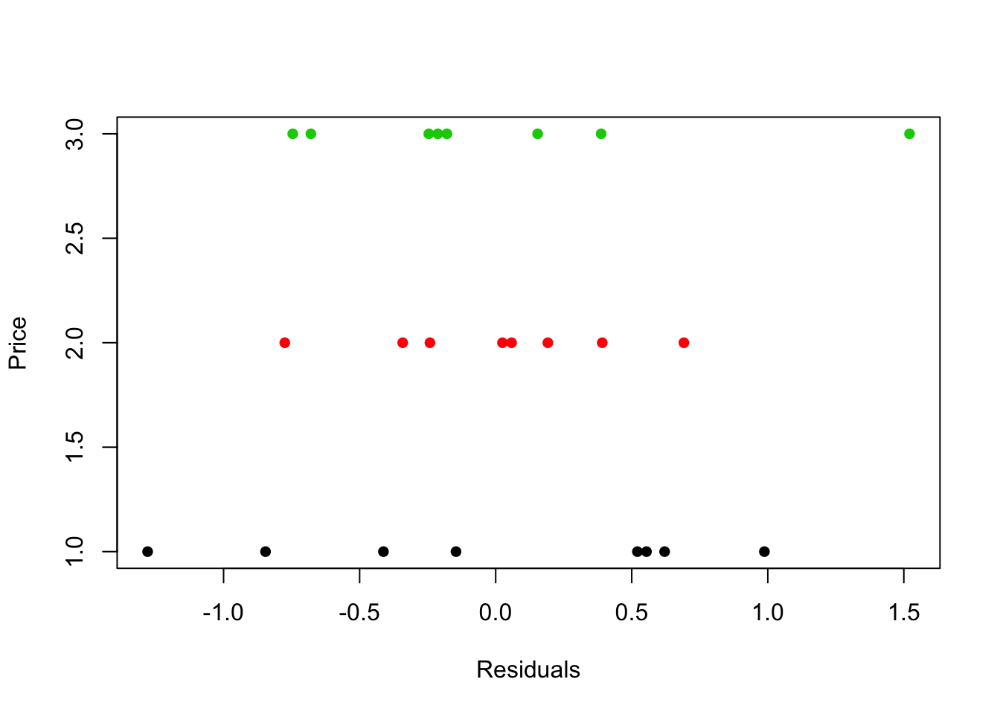
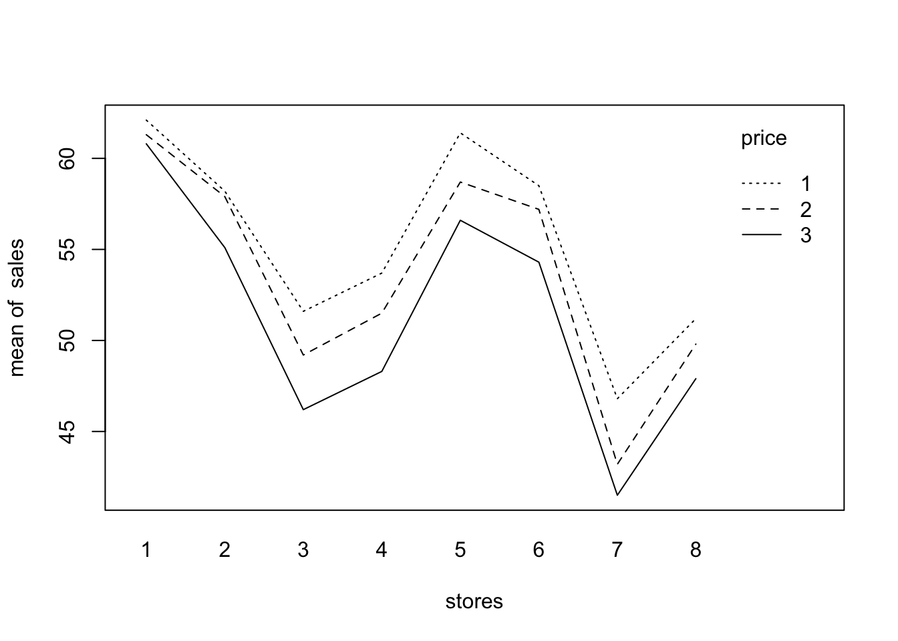

library(plyr)
library(asbio)dt <- read.table("./data/CH27PR06.txt",
col.names = c("sales", "stores", "price"))
dt$stores = as.factor(dt$stores)
dt$price = as.factor(dt$price)fit = aov(sales~stores+price, dt)
residuals = matrix(fit$residuals, nrow=8, byrow=T)
shapiro.test(residuals)##
## Shapiro-Wilk normality test
##
## data: residuals
## W = 0.9874, p-value = 0.9861plot(as.numeric(dt$price)~fit$residuals, xlab="Residuals", ylab="Price", col=dt$price, pch=16)
stores = dt$stores
sales = dt$sales
price = dt$price
interaction.plot(stores, price, sales)
fit = aov(sales~stores+price, dt)
variance_table = round(summary(fit)[[1]], 3)
variance_table## Df Sum Sq Mean Sq F value Pr(>F)
## stores 7 745.18 106.455 155.693 < 2.2e-16 ***
## price 2 67.48 33.740 49.346 < 2.2e-16 ***
## Residuals 14 9.57 0.684
## ---
## Signif. codes: 0 '***' 0.001 '**' 0.01 '*' 0.05 '.' 0.1 ' ' 1variance_table## Df Sum Sq Mean Sq F value Pr(>F)
## stores 7 745.18 106.455 155.693 < 2.2e-16 ***
## price 2 67.48 33.740 49.346 < 2.2e-16 ***
## Residuals 14 9.57 0.684
## ---
## Signif. codes: 0 '***' 0.001 '**' 0.01 '*' 0.05 '.' 0.1 ' ' 1variance_table[2,,drop=F]## Df Sum Sq Mean Sq F value Pr(>F)
## price 2 67.481 33.74 49.346 < 2.2e-16 ***
## ---
## Signif. codes: 0 '***' 0.001 '**' 0.01 '*' 0.05 '.' 0.1 ' ' 1TukeyHSD(fit, "price", ordered=T)## Tukey multiple comparisons of means
## 95% family-wise confidence level
## factor levels have been ordered
##
## Fit: aov(formula = sales ~ stores + price, data = dt)
##
## $price
## diff lwr upr p adj
## 2-3 2.2625 1.1803961 3.344604 0.0002275
## 1-3 4.1000 3.0178961 5.182104 0.0000003
## 1-2 1.8375 0.7553961 2.919604 0.0015069